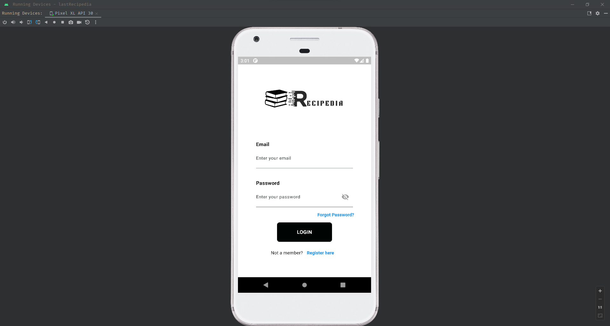

A responsive travel website dedicated to providing information and
services related to travel. It typically includes of popular
destinations, popular places, recent trips, and booking tools. This
travel websites also offer reviews and photos.

Recipedia is a mobile app designed to empower you as a culinary
master. This all-in-one app allows you to add, edit, and delete your
favorite recipes, all while securely storing them in the cloud through
its seamless integration with Firebase. Whether you're a seasoned chef
or a beginner in the kitchen, My Recipe Book provides the tools you
need to manage your personal cookbook effortlessly. Add new dishes
with ease, customize ingredients and instructions, and organize your
recipes with categories and filters.
A responsive bag shop website is designed to adapt to different screen
sizes and resolutions, ensuring that it looks its best and functions
flawlessly on desktops, laptops, tablets, and smartphones. This allows
customers to shop conveniently from wherever they are, whether they're
at home, on their lunch break, or commuting to work.